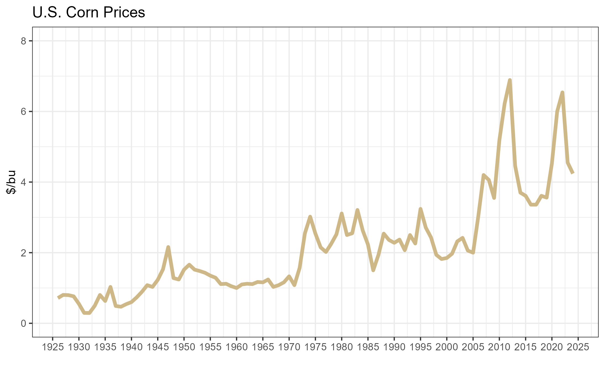

2 Commodity Price Analysis and Forecasting
Interested in more? Please let me know by taking the survey!
A commodity is a good that can be supplied without qualitative differences. A bushel of wheat is regarded as a bushel of wheat everywhere. Commodities are fully or partially fungible so that the market treats a unit of good the same no matter who produced it or where it was produced. Think of grain elevators, for example. Farmers bring their grain to an elevator at harvest. Sometimes they sell it outright to the elevator, but sometimes they pay the elevator to store it for them. When the farmer decides to come get his grain out of storage do you think he gets the exact same kernels he brought in? Of course that would be impractical. The elevator just gives him back the same amount of grain he brought in of the same quality. The farmer is happy because the wheat is fungible. The grain he will be able to sell the grain he took out just as easily as the grain he put in. This is in stark contrast to differentiated goods where branding and quality make important distinctions between goods, resulting in differentiated demands. Just try to find someone indifferent between iPhone and Android!
Since commodities are fungible, it also makes sense that prices of commodities are determined by the entire (often global) market for the good. They tend to be basic resources such as agricultural and food products, metals, energy, an fibers. The fungibility of commodities enables the commodity to be traded in centralized spot and futures markets.
2.0.1 Trasformation Over Space, Time, and Form
Commodities can undergo various transformations. Standard price analysis usually groups these into three broad categories: Space, Time, and Form. Studying a commodity’s transformation over space comes about from the fact that the production of a commodity is often concentrated in a specific geographic location, while consumption of commodities is usually dispersed. In order for traders to have incentive to move a commodity from one location to another, a certain patter of prices must prevail. In short, traders must be able to make a profit, or at least break even in the business of moving a commodity from one location to another.
Studying a commodity’s transformation through time considers the nature of prices required to provide incentive to store the commodity for use at a later date (if it is possible to store the commodity - more on that below), or incentive to bring the commodity to market. Using the example of grain again, grain is produced once per year (in the United States), but consumption of grains occurs all year long. In order for the market to coordinate just the right amount of grain to be stored through time, prices through time give incentive for those holding stocks of grain to bring them to market or hold on longer.
Commodities can be transformed into completely different goods. Sometimes this transformation creates new commodities; for example soybeans are crushed into soybean oil and soybean meal - both of which are considered commodities. Other times the transformation creates products that are no longer considered commodities, where quality and differentiation matters. Meat products are a good example of this. Feeder cattle and live cattle are commodities, but through the slaughter and processing process, the commodity becomes differentiated products - different cuts of meat at the grocery store. Another example is coffee. Green coffee beans are considered a commodity, but once they enter the supply chain companies start transforming it by roasting, grinding, and brewing the coffee. Starbucks, for example, does not sell a commodity. Their product is highly differentiated and they market the fact that their product is highly differentiated in the marketplace.
2.1 Storable and Nonstorable
A key difference among commodities is their degree of storability. Some can be stored for long periods of time:
- Corn
- Soybeans
- Wheat
- Peanuts
- Crude Oil
- Natural Gas
Others are highly perishable or otherwise non-storeable :
- Hogs
- Cattle
- Milk
- Potatoes
- Apples
- Tomatoes
- Electricity
The storability of a commodity has profound implications on market prices. With storable commodities, they can be stored from one period to the next. This means the prices in one period must be related to prices in another period because those holding stocks of the commodity will constantly calculating their expectation of when best to sell - now or later. With non-storable commodities, prices can only be affected by the current supply of the commodity, since past supply cannot be brought forward.
2.2 Commodity Prices
Commodity prices are important both economically and politically in almost all countries. Commodity prices strongly influence farm income, and this can be quite volatile from year-to-year. The United States has a long history of policies aimed at smoothing out the price volatility and income volatility for farmers.
- Price supports
- Revenue supports
- Subsidized crop insurance programs
Some countries’ economies rely heavily on the export of various kinds of commodities. This leaves their economic growth and prosperity subject to volatility in commodity prices. In other countries, particularly in the developing world, a large share of the population for still engages in agricultural production for their livelihood. For these people, commodity prices determine the bulk of their income, and incomes of the poor is a primary concern in developing economies.
2.2.1 Forecasting Commodity Prices in Business
Some companies business model leaves them exposed to risk that comes from price volatility and spend considerable resources forecasting prices. These tend to be companies that deal directly in commodities and need to hedge risks. Some examples include:
- ADM
- Cargill
- Caterpillar
- ConAgra
- Kraft
- Weyerhauser
There are consistent employment opportunities for students trained in price analysis and forecasting, and a growing interest in expertise in risk management strategies.
2.2.2 Price Analysis versus Forecasting
Price analysis and price forecasting are not exactly the same thing. Price analysis tends to be backward looking, while price forecasting is forward looking.
Price Analysis: - Goal is to understand the complex array of forces that influence the level and behavior of commodity prices - Aids in understanding performance of commodity markets - Aids in the development of policy, and is a key component of the policy analysis that leads the a policy’s promotion or demise
Price Forecasting: - Goal is to reliably and accurately forecast future price levels of commodities - The forecasts can be used in marketing and speculative strategies
2.3 Forecasting Basics
All meaningful forecasts guide decisions
- An awareness of the nature of the decisions will impact the design, use, and evaluation of the forecasting process
Form of forecast statement
- Directional forecast
-
Fed steer prices for the first quarter of 2016 will be down compared to the same quarter last year.
- Simple point forecast
-
Fed steer prices for the fist quarter of 2016 = $150/cwt.
- Interval forecast
-
Fed steer prices for the first quarter of 2016 = $140-$160/cwt
- Confidence interval forecast
-
We are 80% confident that fed steer prices fore the first quarter of 2016 will be between $140-$160/cwt
- Density forecast
-
Provides entire probability distribution of forecast price.
Forecast horizon
Forecast horizon is the number of periods between today and the date of the forecast made.
If dealing with monthly data:
- 1-step ahead = One month beyond the current month
- 2-step ahead = two months beyond the current month
h-step ahead =hmonths beyond the current month
More complex situations are common in crop market forecasting
- Typical unit of time is a ‘marketing year’.[^More on the marketing year in Chapter 3]
- Forecasts are typically updated monthly.
Parsimony principle
- Other things equal, simple approaches are preferred
- Also known as Occam’s Razor
The Principle States that among competing hypotheses that predict equally well, the one with the fewest assumptions should be selected. Other, more complicated solutions may ultimately prove to provide better predictions, but - in the absence of differences in predictive ability - the fewer assumptions that are made, the better. (Source: Wikipedia)
Simple approaches tend to work best in real world applications
- Based on decades of experience and research
- Simpler models can be estimated more precisely
- Because simpler models can be more easily interpreted and understood, unusual behavior and outcomes can be more easily spotted.
It is easier to communicate the basic behavior and design of simple approaches, so they are more likely to be used by decision-makers.
Simple approaches lessen the chances of data mining problems.
- If a complex model is tailored to fit historical data very well, but does not capture the true nature of the data process, forecasts will perform poorly.
We focus on two types of “simple” forecasting methods.
Fundamental analysis: use of economic models and data on production, consumption, income, etc. to forecast prices. You will recognize this approach as balance sheet analysis in chapter 3.
Reduced form time-series econometric: use of statistical econometric models that features minimal inputs beyond a few recent prices to generate a forecasting model.
Not covered here, but a method used widely by day-traders and other market participants is technical analysis, which is the use of past price patterns to predict future price movement. There are scores of books on the topic of technical analysis, if interested.
2.3.1 Commodity Production Cycles
The production of agricultural commodities is bound by the biological traits of the life cycle. Forecasting prices requires an awareness of key seasons, and problems that can arise during each phase of the life cycle.
2.4 Long Term Trends
It is useful to begin our exploration of agricultural prices from a long term historical perspective. The figure below is monthly prices received by farmers in the U.S. from 1908 to 2015. Figure 1 presents a graph inspired by the Farmdoc Daily article by Scott Irwin and Darrel Good from April of 2016. In this article they identify three distinct periods of price regimes in corn: pre-1973, 1973-2005, and 2005 to present. Indeed, by simple visual inspection there seems to be three periods of stable prices, from 1908-1973, 1974-2006, and 2007-present. Although the most recent period seems to be the most volatile and provides less confidence that a similar pattern will persist going forward.

There is a clear run-up in prices in the 1970’s and again around 2006-2007. What caused these seemingly permanent price hikes? Make sure you check out the readings to find out!
2.5 Readings
- Agricultural Commodity Price Spikes in the 1970s and 1990s: Valuable Lessons for Today
-
This article was published by staff at the United States Department of Agriculture’s Economic Research Service. They look at historical corn prices and provide some perspective about what caused the price increases in the 1970’s and mid-2000’s.
- Market Instability in a New Era of Corn, Soybean, and Wheat Prices
-
Scott Irwin and Darrel Good had an article in Choices magazine, that examined the price ‘eras’ we described in this chapter. They also discuss the causes of the price paradigm shifts. They argued in 2009 that the new ‘Era’ of crop prices were here to stay, and history has bore this out so far.
- The New Era of Corn and Soybean Prices Is Still Alive and Kicking
-
Scott Irwin and Darrel Good revisit the price ‘Era’s’ discussion again in April of 2016.
2.6 Exercises
From the readings, describe causes of the rapid and persistent increase in prices in the early 1970’s.
From the readings, describe the causes of the rapid and persistent increase in prices in 2006/2007.
In your opinion, is there evidence that price trends will hold at their current levels?